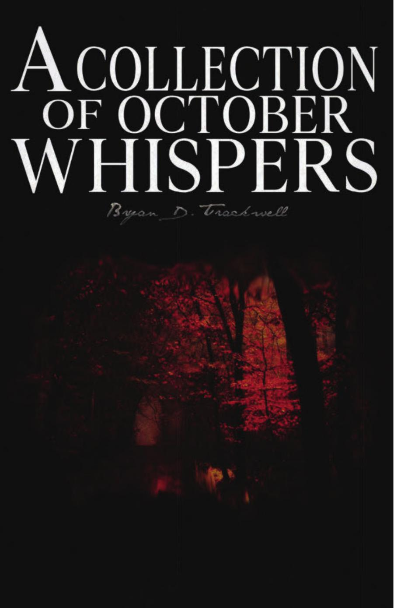
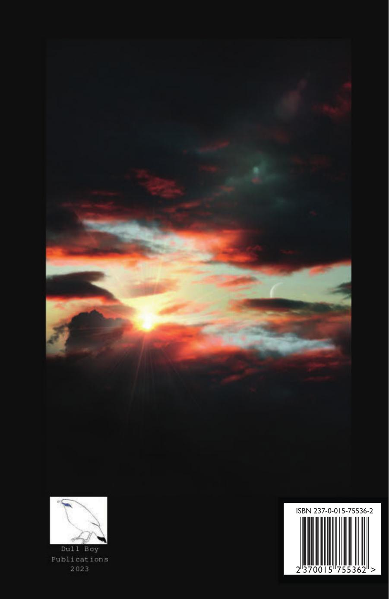

A Collection of October Whispers
Bryan D. Trackwell
6"x9" paperback, 94 pages
Summer has come and passed
The innocent can never last
Wake me up when September ends
Like my fathers come to pass
Seven years has gone so fast
Wake me up when September ends
- Green Day
First volume of poetry by Hoosier poet Bryan Trackwell. Cardinal Moon. February and October meet an end. Ghostlight. House of Spirits. Lycanthropy. Crossroads. Sapphires in the dark. Shooting stars and parachutes. The black iron cold. Valentine. Wolfsbane. And more.